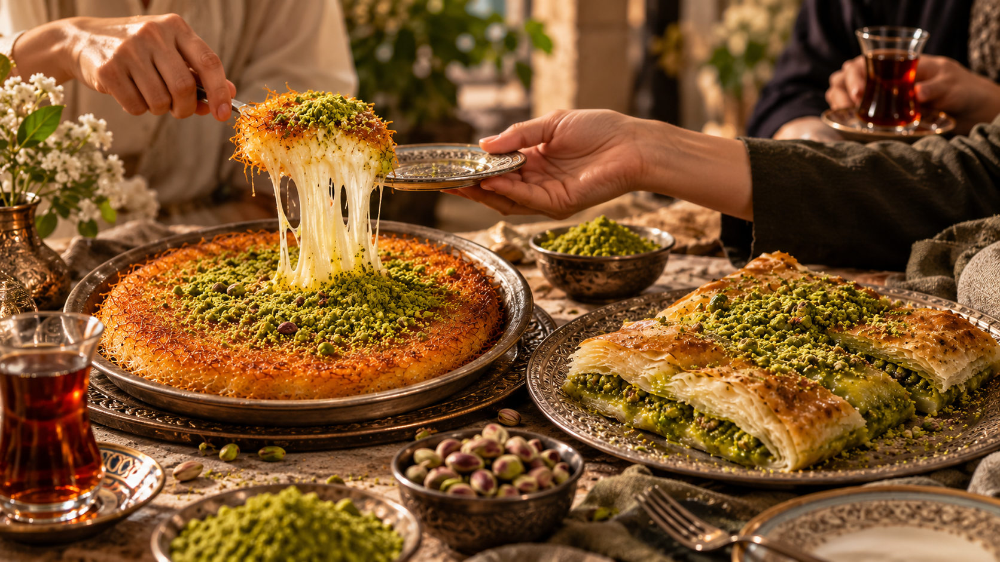

Özü gelenek.
Tadı paylaşmak.
Bir tatlıdan fazlası;
aynı sofrada buluşmanın mutluluğu.

Her lokmada bir gelenek.
Bazı tatlar, sofraya gelir gelmez sohbeti güzelleştirir. Sıcak bir künefenin ilk lokması, katmerin incecik katları, paylaşılan bir tabağın etrafında uzayan sohbet… İncizade, bu tanıdık mutluluğu yaşatma düşüncesini taşır.
Bizim için künefe ve katmer, tatlı kültürümüzün özel bir parçasıdır. Kadayıfın çıtırtısı, peynirin kıvamı, fıstığın kokusu ve tereyağının lezzeti bir araya geldiğinde, geleneğin neden böylesine sevildiğini yeniden hatırlarız.
İncizade’de benimsediğimiz anlayış sade: lezzetin özüne sadık kalmak, sunumuna özen göstermek ve tatlıyı güzel anların bir parçası yapmak. Zarafeti de bu sadeliğin içinde ararız.
İster bir misafir sofrasında, ister günün küçük bir molasında… Dileğimiz, İncizade’nin her buluşmaya sıcaklık katması. Çünkü güzel bir tatlının mutluluğu, paylaştıkça çoğalır.
Lezzetlerimizi keşfedin